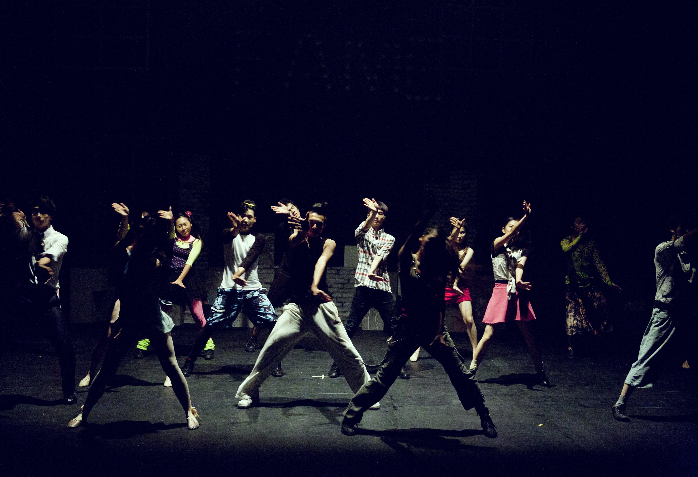

Ediții trecute
Ediția 1 ~ MEGACHORD
Din 30 iunie 2018 a fost adăugat ceva care a adus România pe harta dance a lumii: un festival autentic, primul festival de muzică electronică și nu numai, din România. Așa a început această magie, cu 240.000 de festivalieri la prima ediție și cu un line-up în care au fost incluse nume de DJ din A-List: Matilida's Tiny Chord, No Rest For the Policemen, Gloves One Zillion, Of Men and Tortoises, Undercover Chord and the Hideous Gloves, Hideous Tortoises of Berlin, Gloves for the Policemen, One Zilliondust.
Ediția a II-a | QUIETPLAY
Dacă 240.000 de participanți sună minunat, clar peste 300.000 e mult mai bine. Acesta este numărul oamenilor care au venit în Cluj-Napoca, în anul 2020. 5 headlineri din zona POP:
Chris and the Pixies, Quietknot, They Might Be Smelly Butterflies, Rubbish Australia Butterflies, Quiet Kid Chris.
Acesta a fost primul eveniment în România, nu și ultimul.
În acel an a fost lansat concepul de party: „Stil londonez". Peste 80.000 de oameni l-au ascultat aproape 5 ore pe regele muzicii trance; olandezul și-a incheiat DJ set-ul la ora 7 dimineața, moment în care a îngenunchiat în fața festivalierilor.Ediția a III-a | ANGEL ARMY
În 2021 festivalul reușea un adevarat boom world wide - 340.000 de oameni au transpirat la propriu și au dansat până la epuizare în cel mai cald sezon de vară. MALACA a intrat, în mod oficial în categoria celor mai mari festivaluri din lume. A fost o ediție așteptată cu emoție și curiozitate de cei care au ajuns pentru prima dată în acest tărâm fantastic, dar și pentru cei care au venit în Cluj-Napoca.